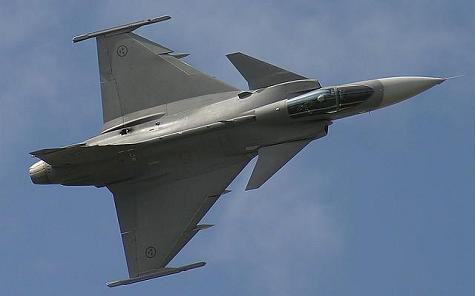

신소재 공학은 항공우주공학에서 골격을 담당하는 학문으로 항공우주공학을 통해 만들어지는 항공기나 로켓을 이루는 소재들을 연구하는 학문입니다. 항공기나 로켓은 하늘을 비행하면서 극한의 상황과 마주하게 됩니다. 빠른 속도로 비행하지 않는 민항기라 할 지라도 낮아도 수 km, 높을 경우 수 만 km상공에서 비행하기 때문에 엄청나게 낮은 기온에서도 기체가 얼어 붙지 않도록 해야하고, 비행할 대 발생하는 어마어마한 압력을 견딜 수 있어야 하기 떄문에 매우 튼튼한 소재를 사용해야 합니다. 전투기나 로켓과 같은 경우에는 음속 이상의 속도로 비행할 때 공기와의 마찰로 인해 생기는 어마어마한 열에도 기체가 변형되지 않아야 하고, 극단적인 기동을 펼치면서 받는 중력의 몇 배에 달하는 압력을 견뎌야 하기 때문에 더더욱 강한 소재를 필요로 합니다. 또한, 두 경우 모두 비행체의 연비를 높혀 효율성을 극대화 하기 위해 비행체를 이루는 소재가 매우 가벼워야 합니다. 이런 문제를 해결해 주는 학문이 바로 신소재 공학입니다.
위의 사진은 '탄소 나노 튜브'라는 것으로 강철보다 훨씬 가벼우면서도 그보다 훨씬 강한 강도를 가지고 있어 미래에 비행체에 사용할 소재로 각광받고 있는 소재입니다. 실제로 보잉사에서 만든 '보잉 787 드림라이너'라는 항공기에서는 기체 일부에 탄소 나노 튜브를 사용해 강도는 강화하면서 무게는 감축해 효율성을 극대화 하였습니다. 탄소 나노 튜브 외에도 신소재 공학은 많은 부분에서 항공우주공학의 발전에 기여하였습니다. 초창기에는 나무와 캔버스를 이용해 만들어진 비행기는 2차 세계대전을 거치면서 강철을 이용해 만들어졌고, 기술이 발전함에 따라 '두랄루민' 이라는 알루미늄 합금을 이용해 만들어지면서 이전에 비해 획기적으로 가벼우면서도 단단하게 만들어졌습니다. 여기서 멈추지 않고, 더 빠르고 극단적인 기동을 하는 전투기나 비행기와는 비교도 되지 않을 정도로 큰 압력을 받는 로켓을 위해 탄소 섬유나 티타늄 합금이 등장하였습니다.
이처럼 신소재 공학은 항공우주공학의 발전에 크나큰 기여를 해왔고, 앞으로도 항공우주공학이 눈부신 발전을 이루는데 큰 역할을 할 것입니다.

전자 전기 공학은 항공우주공학에서 '정신'적인 요소를 담당하는 학문으로 비행체가 작동하는데 필요한 전자적인 요소들을 연구하는 학문입니다. 과거에는 인간이 하나하나 직접 비행체를 조종했지만, 시간이 흐름에 따라 비행체의 조종에 있어 각종 역할들이 인간에서 컴퓨터로 넘어가면서 전자 전기 공학은 점점 더 중요해지고 있습니다.

전자 전기 공학의 발전 덕분에 빛을 본 항공기가 있습니다. 바로 위 사진에서 볼 수 있는 델타익 항공기입니다. 델타익이란 사다리꼴 모양으로 뒤쪽을 향한 날개인 일반적인 후퇴익과는 달리 삼각형 모양으로 생긴 날개를 말합니다. 델타익 구조는 후퇴익보다 양력을 더 많이 받아 속력이 더 빠르고, 기동성이 더 우수하다는 장점을 가지고 있습니다. 하지만 저속 비행 시 기체가 매우 불안정해 진다는 치명적인 단점을 가지고 있습니다. 그래서 과거에는 잘 사용되지 않았습니다. 하지만 전자 전기 공학이 발전하면서 상황이 많이 달라졌습니다. 전자 전기 공학이 발전하면서 컴퓨터도 함께 발전하게 되었고, 델타익 구조의 특성에 의해 발생하는 자세 불안정 문제를 컴퓨터로 해결할 수 있게 된 겁니다. 이 컴퓨터 장치를 '자세 제어 장치'라고 합니다. 이 덕분에 델타익 구조 항공기가 대표적인 전투기의 형태 중 하나로 자리 잡게 되었습니다. 대표적인 델타익 전투기로는 미라주 2000과 같은 과거의 명품 전투기는 물론이고, 현제 프랑스 공군에서 사용하고 있는 라파엘 전투기, 유럽의 몇몇 국가의 공군에서 사용하고 있는 유로파이터 타이푼 등이 있습니다.
전자 전기 공학은 이 외에도 레이더와 같이 항공우주공학에서 '눈'의 역할을 담당하기도 하고, 사격 통제 시스템처럼 조종사의 임무 수행을 도와주는 역할을 하기도 하며, 드론과 같은 무인 항공기를 조종하는데도 매우 중요한 역할을 하고 있습니다.